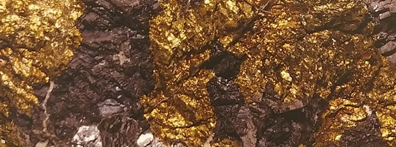
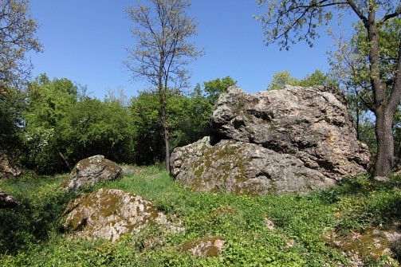

MTM MM Élménytér - Szabadulószoba
● ○○○ ○○○ ○○○ ○○○ ○

MTM MM Élménytér - Szabadulószoba
● ○○○ ○○○ ○○○ ○○○ ○
Bevezetés
Amint belépsz a bányajáraton kezdetét veszi egy időutazás. A 4 teremben összesen 11 feladat megoldása vár rád, hogy összegyűjtve a helyes megfejtések után járó 11 betűt, végül a végső megfejtéssel visszajuss a jelenbe. A fejtörők kibogozásához nincs szükséged lexikális tudásra, csupán meg kell találnod a válaszokat a teremben. Segítségedre lesznek vitrinekben kiállított tárgyak, érintőképernyős programok és falitablók is.
A játékban 3-5 fős csapatok vesznek részt. A jelenbe való visszajutásra 60 perc áll rendelkezésre.
A játék során egy fiatal kutató bőrébe bújhatsz, aki rejtélyes meghívást kap levélben Fix professzortól, a híres tudóstól. Fix professzor azt írja, hogy megfejtette a Bába-kő rejtélyét, de bizonytalan néhány dologban, ezért arra kér téged, hogy járd be te is a felfedezéshez vezető utat. Vizsgáld meg a rendelkezésre álló bizonyítékokat, és gondold végig az eredményeket! Fix professzor arra kíváncsi, hogy ugyanazt a következtetést vonod-e le, mint ő. Ha sikerül, akkor együtt tárhatjátok az eredményeteket a világ elé. Rendkívül csábító ajánlat ez egy kezdő kutatónak, hiszen egy csapásra bekerülhet a neved a híres tudósok névsorába, akik a Föld történetének nagy titkait fejtették meg.
Valami gond van a névvel! Próbáld újra!
Bányaüreg I.
A Mátra gyomrának titkai
Fix professzor felfedező útjának első állomása a vulkanikus Mátra volt. Itt nagyon elcsodálkozott, mert nem is gondolta volna, hogy ennyiféle csodálatos ásványt fog találni. Keresgélés közben pedig rálelt a Bába-kő rejtélyének első három betűjére. Ha megoldod az érdekes feladatokat, akkor tovább léphetsz a következő szintre.
Csoportosítsd a felsorolt ásványokat! Melyik található csak Recsken, melyik csak Gyöngyösorosziban, és melyik fordul elő mindkét településen?
A csoportosításhoz elsőnek érintsd meg az ásvány nevét azután a kategória nevét, ahová tartozik!
Recsk
Mindkettő
Gyöngyösoroszi
Ásványok
pirit
kalkopirit
wurtzit
fluorit
kvarc
barit
aragonit
kalcit
anhidrit
antimonit
szfalerit
dolomit
pirrhotin
galenit
markazit
Nem az igazi! Nézd át újra! Rossz helyen lévő elemek száma: X.
Bányaüreg II.
A titkos kristályrendszerek
Miközben Fix professzor a Mátra ásványait tanulmányozta észrevette, hogy minden ásvány jellegzetes formában kristályosodik ki. Ezeket a kristályformákat hét kristályrendszerbe sikerült rendeznie. A következő feladatod az lesz, hogy találd meg, melyik ásvány melyik kristályrendszerbe tartozik. Ha sikerrel jársz jutalmad egy újabb betű a megfejtésből.
Keresd a párját! Melyik ásvány melyik kristályrendszerbe tartozik?
A párok létrehozásához először érintsd meg az ásvány, majd a hozzá tartozó kristályrendszer nevét!
Kristályrendszer
Ásvány
monoklin
triklin
rombos
tetragonális
szabályos
hexagonális
trigonális
Ásványok
kalkopirit
galenit
kvarc
albit
wurtzit
gipsz
barit
Valami nem jó! Próbáld újra! Rossz helyen lévő elemek száma: X.
Bányaüreg III.
Váratlan fordulat következik be...
Fix professzor váratlanul Gyöngyösorosziban találta magát egy ércbánya mélyén. Itt nagyon szép galenit és kalkopirit ásványokra lelt. A képen láthatod is őket. Ezeket vizsgálgatva bebizonyosodott egy korábbi feltevése, miszerint az ásványok egyszerű kémiai elemekből épülnek fel. Az egyszerűség kedvéért ezeket az elemeket egy képletben összegezte, amit az ásvány neve után írt zárójelbe. Ezután ő pihent egy nagyot a felfedezés örömére, rád viszont vár egy újabb feladvány, amit ha jól fejtesz meg, akkor megint lesz egy betűd a megfejtésből.
Keresd meg, hogy melyik képből származik az alábbi részlet!
Nem jó! Figyeld meg jobban!
Miocén tenger és vulkán I.
Ősi tenger
Fix professzor megérkezett a miocén korba, úgy 23-5 millió évvel ezelőtti időkbe. Ekkor a Mátra területének nagy részén ősi tenger vize hullámzott, aminek emlékét számtalan érdekesebbnél érdekesebb ősmaradvány őrzi. A Mátra bizonyos részeit viszont időről időre hatalmas vulkánkitörések rázták meg. Például ekkor került felszínre a hegység fő tömegét adó andezit és andezittufa. Miközben kedvenc professzorunk az ősmaradványok és vulkáni termékek között kutatott megtalált újabb három betűt, ami közelebb vitte a felfedezéshez.
A középen lévő diorámán egy kirakó darabjait látod. Ha a darabokat ügyesen összeilleszted, akkor egy térképet fogsz látni, ami azt ábrázolja, hogy hogyan nézett ki a Földünk a miocén kor idején. Ha szemfüles vagy, akkor észreveszed a megoldást is a képen. Ez lesz a következő betűd a szabaduláshoz.
Nem jó! Próbáld újra!
Miocén tenger és vulkán II.
Hullócsillagok
Fix professzor eddigi eredményein tűnődve a csillagos eget bámulta. Hirtelen felvillant egy hullócsillag fényes csíkot rajzolva az égre. A professzor gondolatai ekkor elkalandoztak, és arra gondolt, hogy ezek amilyen gyönyörűek olyan veszélyesek is lehetnek.
Nem léphetsz tovább! Nézd meg újra!
Miocén tenger és vulkán III.
Fix professzor hitvese
Fix professzor feleségének van egy kedvenc ásványa, mégpedig az üvegopál. Amikor eszébe jut, mindig beleborzong, hiszen úgy vonja be a kőzetet ez az áttetsző ásvány, mintha fagyott víz borítaná. Órákig képes elnézegetni kedvenc darabjait, ilyenkor még főzni is elfelejt. Mivel az üvegopál a Mátrában több helyen is fellelhető, Fix professzor úgy döntött, hogy gyarapítja szeretett hitvese gyűjteményét. Szórakozott professzorunk keresgélés közben folyamatosan azon töprengett, hogy mi is ennek a különleges ásványnak a másik neve.
Nem jó! Próbáld újra!
Pleisztocén I.
Jégkorszak
Fix professzor az üvegopállal a zsákjában hirtelen a pleisztocén egyik jégkorszakának a kellős közepén találta magát. Már csupán 2,5 millió - 12 ezer évvel ezelőtt járunk a Föld történetében. A Mátra előterében elterülő füves pusztán gyapjas mamutok és gyapjas orrszarvúk legelésztek gyanútlanul, miközben emberelődeink igyekeztek zsákmányul ejteni őket. A jégkorszaki kaland során újabb három betűt talált a furfangos feladványok megfejtése közepette, ami közelebb vitte őt a végső megoldáshoz.
Keresd meg a teremben elrejtett 4 képet, amik ősmaradványokat ábrázolnak! Az egyik kép hátoldala ismét közelebb visz majd a végső megfejtéshez.
Egy másik betű a jó megoldás!
Pleisztocén II.
Rejtélyes barlang
Egyik reggel Fix professzor egy barlangban ébredt fel, és amikor kinyitotta a szemét érdekes rajzokra lett figyelmes a barlang falán. A rajzok tanulmányozása közben rájött néhány fontos dologra a jégkorszakkal kapcsolatban. Készített számodra egy kvízt, aminek a megfejtésével újabb betűt kapsz a rejtély megfejtésének kulcsához.
Oldd meg a kvízt!
Érints meg kérdésenként egy-egy választ!
1. Mikor kezdődött a legutóbbi jégkorszak?
a, 2,6 millió évvel ezelőtt
p, 2,6 milliárd évvel ezelőtt
c, 26.000 évvel ezelőtt
2. Mi volt a legutóbbi eljegesedés legnagyobb testű szárazföldi állata?
é, Gyapjas orrszarvú
f, Gyapjas mamut
g, Barlangi medve
3. Hogyan védekeztek az eljegesedés idején élő emlős állatok a hideg ellen?
z, Kunyhót építettek
d, Tüzet raktak
k, Vastag bundát növesztettek jól szigetelő szőrzettel
4. Melyik kőzet alakult ki a jégkorszak folyamán?
f, Lösz
h, Mészkő
ó, Gránit
5. Élt-e ember a legutóbbi eljegesedés idején Európában?
s, Igen, a neandervölgyi ember és a Homo sapiens is élt már
j, Igen, egy nagyon kezdetleges embertípus
h, Nem, az ember csak a jégkorszak után alakult ki
Próbáld újra! Rossz válaszok száma: X.
Pleisztocén III.
Különös állatok
A pleisztocén folyamán számos olyan élőlény élt a Kárpát-medencében, melynek közeli rokonai még ma is előfordulnak csak hozzánk képest távoli tájakon. Mit gondolsz mikor éltek itt oroszlánok, vízilovak, vagy éppen hiénák?
Keresd meg a teremben a játékot, amit Fix professzor készített számodra a Kárpát-medence állatvilágának változásairól a pleisztocén során! Ha jól dolgoztál, akkor azt is megtudod, hogy melyik állat található a víziló és az oroszlán között.
Valami nem jó! Nézd meg újra!
Holocén I.
Egy kis keveredés
Fix professzor megérkezett útja utolsó állomásához a holocén földtörténeti korba, ami 12 ezer évtől napjainkig tart. Itt megismerkedett az emberiség vándorlásának történetével, és néhány ritka régészeti leletet is talált. Már csak két próbatétel választotta el a végső sikertől, hogy kiderüljön a Bába-kő rejtélye.
Az asztalokon láthatod a Föld történetének nyolc fontos állomását. Ezekben az asztalokban képek vannak elhelyezve, minden kép hátán egy-egy betű látható. Ahhoz, hogy közelebb juss a megfejtéshez meg kell találnod a kakukktojást, miközben párosítod a képeket a földtörténeti korokat szimbolizáló asztalokkal. A kakukktojás kép hátoldalán lesz a következő betű, ami közelebb visz a titok megfejtéséhez.
Nem az igazi! Próbáld újra!
Holocén II.
Az utolsó lépés
Itt Fix professzor már nagyon közel állt a titok megfejtéséhez. Neked is a hátad mögött van 10 próbatétel, úgyhogy csupán egy feladatot kell még megoldanod.
A földön láthatod, hogy hogyan vándoroltak őseink az évmilliók folyamán. Ahhoz, hogy az utolsó betűt is megtaláld a végső megfejtéshez meg kell oldanod a feladatot! Melyik szigeten jelent meg az ember 1500 évvel ezelőtt? Segítek! Több részes rajzfilm is készült erről a helyről.
Valami nem jó! Pórbáld újra!
Holocén III.
Íme a megoldás!
Fix professzor kalandos útja ezzel véget ért. Megtalálta az összes betűt a Bába-kő titkának megfejtéséhez és a titok birtokába jutott. Arra kér, hogy vond le te is a végső következtetést. Szeretne megbizonyosodni arról, hogy te is ugyan arra a megoldásra jutottál, mint ő.
Az alsó sávban látható betűket át tudod rendezni, hogy könnyebb legyen gondolkodni! Csak érintsd meg a kicserélni kívánt betűt, majd azt is, amelyikkel szeretnéd, hogy helyet cseréljen!
Valami nem jó! Pórbáld újra!
Befejezés
Megtaláltad a Bába-kő rejtélyét, a hévforrást. Véget ért a képzeletbeli utazás térben és időben. Nagy utat jártál be, ügyesen megoldottál minden feladatot. Remélem, hogy jól érezted magad, és emlékezetedben megőrzöd, amit tanultál a feladatok megfejtése során.
A(z) Anonymus elnevezű csapat teljesítette a küldetést X perc alatt.
Bába-kő
Gyöngyössolymos határában a kis, jelentéktelennek tűnő szikla geológiai ritkaság. Vajon hogyan jött létre? A miocén korban a vulkáni utóműködések során forró gázok és gőzök törtek fel a mélyből, hévforrások és gejzírek működtek. A gejzírek kovasavtartalmú meleg vize néhol átalakította a hegy kőzeteit, és új kőzet keletkezett, a gejzírit. Ez alkotja a Bába-kő szikláit.
Egyébként a régi korok emberét is foglalkoztatta a Bába-kő rejtélye. Egyik babonás néphit szerint a nevét onnan kapta, hogy hajdanán itt égették el a boszorkányokat. Egy másik hiedelem szerint, viszont az öreg Mátra szelleme kergette a vasorrú bábát, akit nem tudott utolérni, így mérgében utána dobta ezt a nagy követ. Ezért hívják Bába-kőnek. Mi is történt valójában? Azt talán csak maga a Bába-kő tudja…
